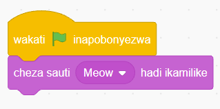

4. Baada ya kuunganisha utapata programu kama inavyooneshwa katika Kielelezo namba 32.

Kielelezo namba 32: Bloku ya ‘cheza sauti’ imeunganishwa na bloku ya ‘wakati inapobonyezwa’
5. Bofya au tumia mishale ‘Anza’ kucheza mchezo na usikilize sauti inayotoka. Umesikia/umehisi nini ulipocheza?
Miundo ya kudhibiti programu
Miundo ya kudhibiti programu inahusu jinsi mtiririko wa maelekezo ya kompyuta unavyodhibitiwa. Kuna aina tatu za miundo ya kudhibiti programu. Miundo hiyo ni mlolongo, marudio na maamuzi.
Muundo wa mlolongo katika usimbaji
Katika usimbaji, programu huenda katika mtiririko ambao hufuata namna bloku zilivyopangwa. Bloku ya kwanza inatekelezwa kabla ya bloku inayofuata. Kwa mfano, katika Kielelezo namba 33:
1. Bloku ya ‘wakati inapobonyezwa’ hutekelezwa kabla ya bloku ya ‘enda kwa (mahali popote)’.
2. Bloku ya ‘enda kwa (mahali popote) ‘ hutelekezwa kabla ya bloku ya ‘zunguka digrii/nyuzi’.